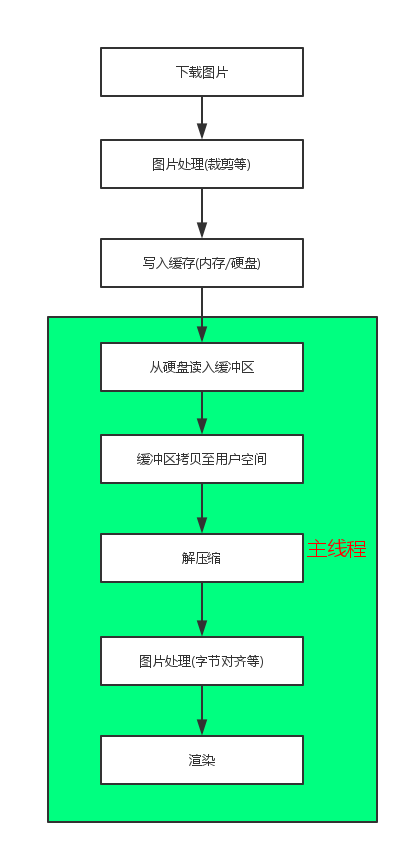
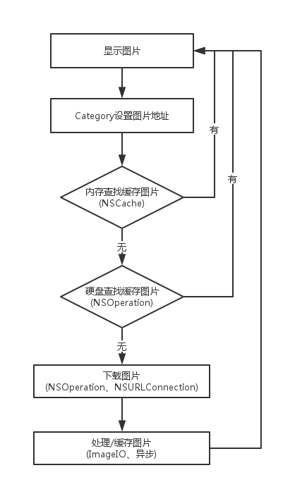
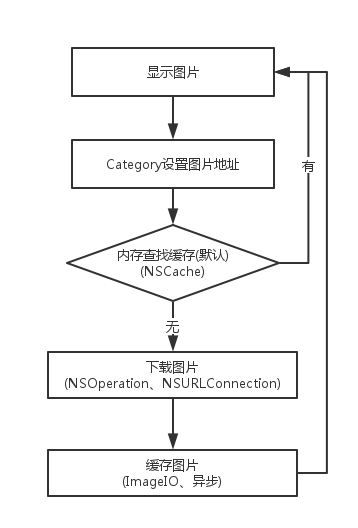

现有iOS端图片缓存解决方案
移动App中使用网络图片的情况很常见，如果缓存问题处理不好会很大程度上影响App的性能。本文简单介绍一下图片缓存流程及GitHub上现有解决方案。
一般图片缓存及使用流程
最简单的缓存方式：
1 | let imgData = NSData(contentsOfURL: NSURL(string: "http://7narze.com1.z0.glb.clouddn.com/1.jpg")!) |
很明显，下载图片和缓存图片时有主线程阻塞。那么优化成下面的样子：
1 | dispatch_async(dispatch_get_global_queue(QOS_CLASS_DEFAULT, 0)) { () -> Void in |
这样是在子线程下载并缓存，性能上会好很多，但很明显这样不够用。
一般缓存流程

从上图，可以看出还有很多可优化点
1 | 异步下载 |
现有解决方案
好，下面我们简单介绍下目前GitHub上比较流行（star数据大于2000）的图片缓存库。
SDWebImage
基础流程

- 优点
- 健全的Category
SDWebImagePrefetcher预加载- 独立的下载模块/缓存模块
- 自定义
age
- 缺点
- 因缓存的图片数据已解码，故占用空间变大(这个也算不上缺点)
- 没有处理减少内存级别的拷贝和
字节对齐(FastImageCache对此有处理) - 图片属于静态资源，没有判断
Cache-Control、Last-Modified或ETag(通用库做到这点有些麻烦)
Kingfisher
SDWebImage的Swift版
流程基本和SDWebImage一致
- 优点
Swift编写- 使用很多最新API
- 其他同
SDWebImage
- 缺点
- iOS 8 later
- 其他同
SDWebImage
AFNetworking
基础流程图

- 优点
- 健全的Category
- 缓存机制可定制(实现
AFImageCache) - 依附
AFNetworking
- 缺点
- 功能单一
- 缓存仅在内存中(默认实现)
FastImageCache
无网络缓存功能，但却是图片加载速度极限优化
总结
实际应用中推荐SDWebImage/Kingfisher结合FastImageCache使用。若要考虑HTTP的缓存机制，可以自己继承/实现封装。